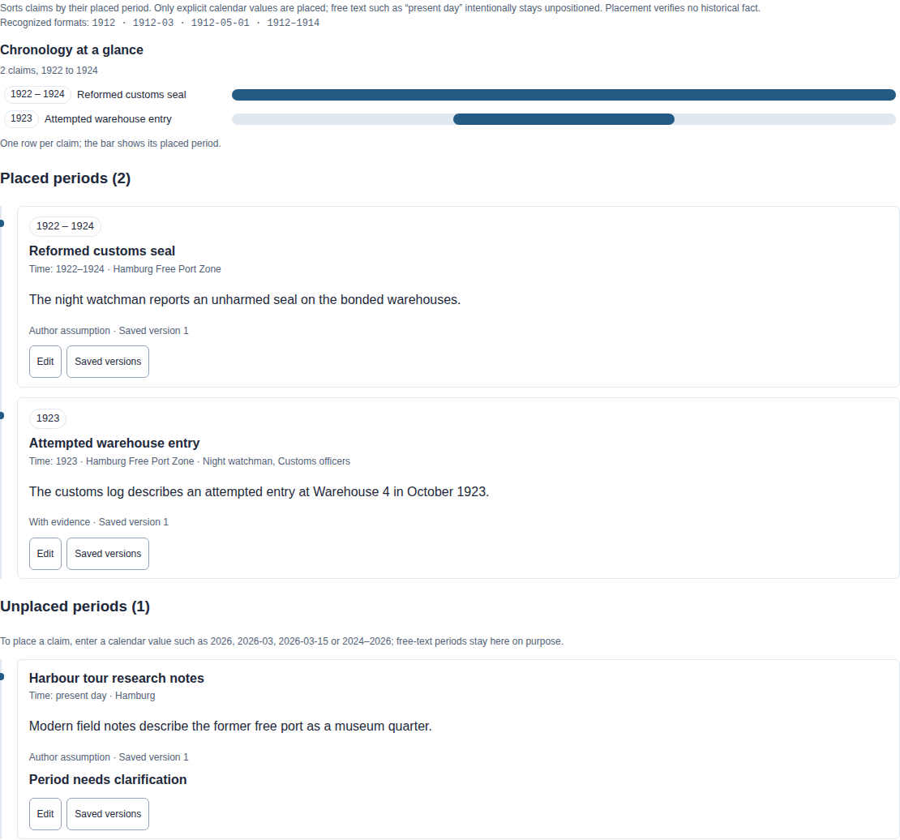

Keep sources and work with PDFs
Keep permitted source copies, cite exact passages and connect them with research notes, claims and writing decisions. Lixity's research workspace is experimental. An import or citation helps you review evidence; it does not establish that a claim is true.
Maintained by the Lixity project · Updated
Export a manuscript as PDF
Since v0.3.0: open PDF export in the global project controls above the three workspace views. Choose A5 reading copy (default), A4 manuscript sheets or A4 analysis report, then select Download PDF to save it. The menu starts collapsed and stays available in all three views. The PDF goes directly to your browser without creating server export files or changing the manuscript or research archive. Standalone HTML has no download action. The NDA PDF in Project & Settings generates an agreement and is separate from manuscript export.
The terminal command introduced in v2.3.0 remains available:
Use lixity pdf to create an A4 analysis report, an A5 reading copy or an A4 submission sheet with at most 30 lines per page and 60 characters per line. This command reads a Markdown manuscript and composes its output locally; it does not import a research source, run OCR or modify the manuscript.
lixity pdf manuscript.md --layout report -o analysis.pdf
lixity pdf manuscript.md --layout book --author "Name" -o reading.pdf
lixity pdf manuscript.md --layout sheet -o submission.pdfThe renderer embeds host TrueType fonts and keeps supported text searchable and copyable. It needs no browser or external converter. Missing glyphs report their font role and Unicode codepoint; there is no automatic mixed-script fallback, contextual shaping or bidirectional layout. The layouts do not provide PDF/X production preflight. See PDF options, font selection and limits.
Enter publication details
Since v0.3.0: open Project → Settings → Publication in the native workspace. The disclosure starts collapsed and requires an explicit project. Title, author and optional publication data use the existing configuration and PDF composer. Select the inclusion checkbox to add entered imprint text after the A5 reading copy's title page. A4 sheets and reports omit it; all-empty fields add no blank imprint page. Long entries can continue across pages.
Enter publisher/self-publisher name and address, printer name and address, edition, year, print and digital ISBNs, rights notice, credits or other information as needed. Every text field defaults to empty. Lixity checks syntax and bounds, not assigned ISBNs, rights or legal completeness, and supplies no inferred identity, address, copyright notice or DNB catalog claim. See the complete configuration contract.
Apply saves title, author and publication together in the selected project's lixity.toml; language and analysis controls keep their session behavior. The updated view is prepared before metadata is committed. Failed validation, reading, rendering or replacement keeps the previous metadata and active view. Reload after a project/config change so the form and PDF export use the current context.
For print in Germany, requirements depend on the Bundesland. BayPrG Article 7 and NRW § 8 require printer/publisher names or business names and addresses, with author/editor identity for self-publishing. Enter the actual publishing identity separately from a pen name.
Digital provider/website duties are separate. MStV § 18 addresses name/address information beyond purely personal or family telemedia; DDG § 5 adds contact and applicable business disclosures for businesslike digital services normally offered for payment. Check the provider and distribution channel: every ebook does not automatically need every website field. Lixity does not publish or validate a website imprint.
ISBNs are voluntary; separately available print, PDF and EPUB formats use distinct numbers when assigned. Lixity compares canonical identifiers, so equivalent ISBN-10 and ISBN-13 forms cannot identify two different formats. A rights notice is optional: copyright generally arises without formalities. Legal deposit is a separate publication process that Lixity does not perform.
BFSG § 1 covers consumer e-book services provided after 28 June 2025; § 3(3) exempts microenterprises providing services. Scope and exceptions must be checked for the publication. Lixity exports fixed-layout A5 book/A4 sheet/A4 report PDFs, without EPUB, PDF/UA or PDF/X certification. Searchable text, metadata and bookmarks do not establish BFSG compliance.
Since v0.3.0: PDFs share title/author/language metadata and corrected font subsets. A5 chapters have bookmarks; body pages have bounded running headers and physical folios. Title/imprint pages have no running decorations but still count toward folios. A4 sheets and reports show current/total page counts outside the body grid.
Import a local source
Start with a source you are allowed to retain. This synthetic example assumes you saved a short note as source.txt. Initialize only a new research archive:
lixity research init --project ./sample-project --title "Sample research" --language en
lixity research ingest --project ./sample-project --file ./source.txt --allow-retention --origin-url https://example.org/archive/source
# Or import several files with phase-change messages:
lixity research batch-ingest --project ./sample-project --allow-retention --progress ./sources/*.txt
lixity research search --project ./sample-project --query "reading room"--allow-retention confirms your permission to keep source bytes locally. It neither grants redistribution rights nor makes a claim true. Avoid importing sensitive sources into public repositories.
In Research → Sources, choose a text or PDF file, or paste text. Add optional details if needed, then confirm retention. Import is disabled while processing; a failed submission keeps the form for correction. If all active sources are linked to Zotero, the dashboard shows Zotero capture instead; direct import remains available through the API.
For a visual reference, open a dossier and choose Add image. Preview an authorized local PNG/JPEG, describe it and confirm retention before saving. The original image and dossier version are saved together. Earlier versions keep their exact image; removed images show an unavailable placeholder. Images have no extracted text or linguistic scores. See format limits and archive compatibility.
What does the origin URL do?
This field records the original HTTP(S) address in source details and citations. Lixity does not fetch the page or monitor it. Use a stable public address where appropriate; credentials and whitespace are rejected. Do not include private access tokens or signed download links.
Matching URLs do not merge sources. Refreshing a named source with a new URL creates a new capture; earlier citations keep their original text and URL. These captures use the v2 archive format. Back up before upgrading and use compatible readers and writers; see archive compatibility.
Use Zotero as the source and media catalogue
Run Zotero on the same computer as Lixity and download the attachments you need. In Research → Sources → Zotero, choose a library and collection, inspect an item, select a PDF/text attachment and confirm retention. Lixity reads the local API without changing the Zotero library. Images, audio and video remain in Zotero; they are not transcribed or analyzed.
Captured evidence stays readable when Zotero is closed. Refresh linked sources explicitly when they change; old quotations stay intact. There is no background synchronization. Zotero captures need the v3 archive format, which older readers cannot open.
To bring existing Lixity sources into Zotero, research zotero-export creates a RIS import bundle with retained files and their identifiers. Export preserves the Lixity archive. Follow the setup, migration and compatibility reference, and verify imported files before relying on the new workflow.
Search sources and current notes
The dashboard Search tab includes sources and current dossiers, claims and decisions. Choose a narrower scope when needed, then use View details to read a result. Search refreshes an outdated index automatically; --strict reports an error instead. Only source passages can be cited as evidence.
lixity research search --project ./sample-project --query "inspector" --scope all
lixity research search --project ./sample-project --query "inspector" --scope decisionsThe CLI defaults to source passages. Search matches words in current records, not their history; it does not reconcile conflicting claims or decide whether a proposal is final. Keep decisions and open questions explicit in your notes.
Choose a citation by keywords
Since v3.0.0: select a claim in the evidence form and choose Find source passage. Search opens with Sources selected and keeps your claim choice. Read a match, choose Use for claim, then review the full paragraph, select the evidence relation and save explicitly. A search match or draft does not verify a claim or create a saved link.
lixity research cite --project ./sample-project --query "reading room"
# For multiple matches, repeat the same query and displayed snapshot:
lixity research cite --project ./sample-project --query "reading room" \
--pick 2 --expected-snapshot SNAPSHOT_SHA256One match resolves the existing full-paragraph citation. Zero or multiple matches return search JSON and exit 1; multiple matches print numbered choices on stderr. A numbered choice requires the same query and displayed snapshot. Changed snapshots or unavailable sources require another search. Exact --passage retrieval remains available for historical captures. See the selection and API reference.
Organize claim periods and causal interpretations
Since v3.0.0: inside Claims, choose Timeline. It places valid four-digit CE years, YYYY-MM months, ISO dates and supported ranges while preserving your original period labels. Missing, unclear or invalid periods remain visible under Unplaced periods. Reading makes no archive changes, and creation dates never stand in for historical periods.
The timeline sorts claims by the calendar value in their period and shows how the placed spans relate. Every dated claim is one row on a shared axis; the badge repeats its placed range and Placed periods lists the full cards below. Free-text periods such as present day are not calendar values, so they stay under Unplaced periods with a reason and a formatting hint. To place a claim, enter a value like 1926, 1926-03, 1926-03-15 or 1924–1926; the claim form shows these formats and a save reports an unplaceable period as a warning. The axis shows only what you entered — placement never verifies a historical fact.

Under Cause and effect claims, choose a proposed cause and effect, review their saved versions and save your interpretation explicitly. A later claim edit leaves the link pinned to its earlier versions and marks it for review. Edit or retract through the shared revision editor; earlier interpretations remain in history. Self-links are rejected, cycles are allowed, and no causal truth or additional links are inferred.
lixity research timeline --project ./sample-project --format text
lixity research relate --project ./sample-project FROM_CLAIM TO_CLAIM \
--relation causes --rationale "Author interpretation for review"Replace the claim placeholders with complete IDs from the claim list. results_in is an alias for causes in the same cause-to-effect direction. Software consuming claim lists must update to the uniform research-claims-local/2 envelope; stored claims remain unchanged. Read the 3.0.0 release notes and implemented chronology and compatibility reference.
Prepare evidence from selected source text
Since v2.4.0: open a retained source and select text within one uniquely resolved paragraph. The selection action prepares the existing claim evidence-link form. Its preview shows both your selected quote and the full retained paragraph; choose a claim and relation, add your own rationale if needed, then save separately.
The saved citation still identifies the whole paragraph and its source version. It creates no sentence-level citation. Cross-paragraph or ambiguous selections are unavailable; use the whole-passage actions in the Passages view instead. Selecting text or opening the draft writes no record. Evidence status labels express your own assessment, not historical certainty or a computed probability.
For reading notes against the manuscript, open Dossier alongside in Manuscript & Analysis and choose a dossier, or use the action on that dossier's card. The optional companion reader is read-only. Closing it preserves manuscript search and open paragraphs; refresh explicitly for the latest saved dossier version. Narrow screens place the dossier above the manuscript.
Use the intended research project in the terminal
Since v2.4.0: existing-archive commands may omit --project only when your current directory is itself a validated initialized research project. Lixity does not search parent folders or reuse the browser's last project. An explicit --project remains authoritative. Initialization still names its project.
cd ./sample-project
lixity research search --query "reading room"
lixity research link urn:uuid:YOUR-PASSAGE-UUID urn:uuid:YOUR-CLAIM-UUID --relation contextualizesReplace the placeholders with full returned IDs, passage first and claim second. The short command creates an evidence link; link-evidence retains its existing creation, inspection and revision operations. See scope, defaults and compatibility.
Associate manuscript text with a claim
Since v0.3.0: select text within one opened manuscript paragraph, choose Link selection to claim, choose a current claim, permit local retention of the quote and select Save association. Previewing writes nothing. Saving keeps a manual association to the exact claim version, with the quote and paragraph anchor; it does not import the complete manuscript or edit prose.
Exact resolved quotes are marked when their paragraph opens. Changed text or claim versions request review; an edit outside the quote resolves as adjusted and can be re-pinned explicitly in the review tab (or with reconcile-manuscript --accept-moved), while edited quotes and ambiguous paragraphs remain unresolved. Saved associations are listed in the research Review tab with their anchor state and review flags; listing them never writes or repins. These flags do not establish a contradiction or factual support. Both dossier readers show current linked claims with saved-version history and active saved quote counts. Zero saved links does not establish that a claim is unused in prose.
Can Lixity read scanned PDFs?
A PDF with selectable text can use local Poppler tools. An image-only scan needs locally installed Tesseract or a configured OCR worker to recognize text. Installing Lixity does not install either engine, download a model or start a worker service.
lixity research ocr-status
lixity research ingest --project ./sample-project --file ./document.pdf --allow-retention| Diagnostic status | Meaning and next action |
|---|---|
native_only | Poppler tools are available. Text-layer PDFs can be extracted; select Tesseract or a configured worker for scans. |
ready | The selected engine and required page rendering are available. This is a configuration check, not a recognition-quality test. |
partial | Page rendering is unavailable. Native text extraction may still work; install pdftoppm to use OCR on scans. |
misconfigured_worker | The configured executable was not found or is not executable, or its timeout setting is invalid. Check its path, permissions and LIXITY_OCR_TIMEOUT in the server environment. |
misconfigured_backend | Check the selected backend, local Tesseract, installed language data and timeout. Run lixity research ocr-status for details. |
missing_dependencies | Install Poppler for local PDF extraction; select Tesseract or a configured worker for scans. |
Install poppler-utils on Debian/Ubuntu or poppler with Homebrew on macOS. The server must be able to find pdftotext and pdftoppm. Check extracted quotations against the original PDF; configuration checks do not measure recognition accuracy.
Scans can use locally installed Tesseract without a separate worker service. Set LIXITY_OCR_BACKEND=tesseract and choose installed language data with LIXITY_OCR_LANGUAGES (default eng), then restart the server. Diagnostics list missing languages. New native Poppler and local Tesseract captures require a v4 archive reader; existing cached provenance stays unchanged. Local OCR setup and compatibility.
Connect an existing self-hosted worker
This is optional technical setup for a separately maintained model adapter. The deployment guide explains the worker boundary and records the retired CPU experiment. Baidu's tools cannot be used directly as a Lixity worker.
Set LIXITY_OCR_WORKER to one executable path, not a shell command. The default timeout is 120 seconds; LIXITY_OCR_TIMEOUT accepts 1–3600 seconds. A configured worker failure or incomplete result rejects the import unless native fallback is explicitly allowed. Native extraction can omit scanned pages in mixed PDFs; inspect its page warnings. See the worker interface and limits for the JSON contract.
export LIXITY_OCR_WORKER=/absolute/path/to/ocr-worker
lixity research ocr-status
lixity serve /absolute/path/to/project --host 127.0.0.1 --port 8765These commands use a POSIX shell. Use equivalent environment settings on Windows or in a service, then restart the server. Test a synthetic scan and compare its extracted quotation with the page.
Lixity retains the original PDF and extracted text separately. Citations identify spans in that text; they do not provide audited page coordinates or recognition confidence. Consult the original when visual evidence matters.
Back up and test restoration
The project's research/ folder contains the evidence archive. The search index can be rebuilt and is not a backup. Keep backups outside public repositories and avoid writes while exporting.
lixity research export --project ./sample-project --output ./sample-backup.tar.gz
lixity research restore --from ./sample-backup.tar.gz --to ./restored-sample
lixity research audit --project ./restored-sample
lixity research reindex --project ./restored-sample
lixity research search --project ./restored-sample --query "reading room"Restore into a new, empty target. Restoration checks paths, checksums and record links. Resolve a known passage afterward to check its quotation and original URL. A successful audit checks archive integrity, not historical truth or permissions.
research zotero-backup pairs the archive with a selected Zotero data folder; you must close Zotero first. research zotero-restore verifies and restores both into a new directory without replacing a working library. Manuscripts, application profiles and external linked attachments need separate backups. Test a restored citation and follow the backup reference before relying on the pair.
Command-line example: sources to decisions
This optional example uses authorized local source files. Replace paths and UUID placeholders with the files and identifiers returned by earlier commands. Initialize the archive only once, and prepare ./sources/harbor-dossier.md before importing that dossier.
Show the complete command-line example
# 1. Initialize a dedicated research workspace
lixity research init --project ./novel-research --title "1920s Archive" --language en
# 2. Ingest primary source with cultural source criticism and explicit retention
lixity research ingest --project ./novel-research --file ./sources/police_log_1923.txt \
--context '{"genre": "Police Log", "created_period": "1923", "place": "Hamburg", "provenance_note": "State Archives"}' \
--allow-retention
# 3. Rebuild search explicitly (ordinary search refreshes it automatically)
lixity research reindex --project ./novel-research
# 4. Search source passages; add --scope all for current authored records
lixity research search --project ./novel-research --query "dockyard customs" --limit 5
# 5. Resolve a passage citation (paragraph, exact offset, source metadata)
lixity research cite --project ./novel-research --passage urn:uuid:PASSAGE-UUID-HERE
# 6. Run linguistic source analysis and generate standalone source dashboard
lixity research analyze --project ./novel-research --source-id urn:uuid:SOURCE-UUID-HERE
lixity research dashboard --project ./novel-research --source-id urn:uuid:SOURCE-UUID-HERE > source_report.html
# 7. Compare source and manuscript vocabulary; create a dossier
lixity research compare --project ./novel-research --source-id urn:uuid:SOURCE-UUID-HERE --manuscript ./manuscript.md
lixity research dossier --project ./novel-research --title "Harbor Evidence" --file ./sources/harbor-dossier.md --tags "harbor"
# 8. Record a claim, passage relation, and authorial decision
lixity research claim --project ./novel-research --title "Harbor opening" --statement "The harbor opened in 1923." --confidence hypothetical
lixity research link-evidence --project ./novel-research --claim-id urn:uuid:CLAIM-UUID-HERE --passage-id urn:uuid:PASSAGE-UUID-HERE --relation supports
lixity research decision --project ./novel-research --title "Shift opening date" --rationale "Narrative chronology" --claim-id urn:uuid:CLAIM-UUID-HERE --deviation-from-fact
# 9. Open a foreground research dashboard (stop with Ctrl+C)
lixity serve --research-project ./novel-research --no-project
# 10. Audit repository integrity and snapshot checksums
lixity research audit --project ./novel-researchFor the managed app instead, use lixity service start --open and Open Project to select the archive. See the lifecycle guide.
Input and research limits
Text inputs must be nonempty UTF-8 without NUL bytes, up to 2 MiB; PDFs can be up to 50 MiB. Imports allow at most 5,000 nonempty passages. Search matches words using SQLite FTS5/BM25; it does not translate text or search by meaning. Refreshing a source does not automatically update your claims or decisions.
See the implemented research reference for CLI/API details. The broader research RFC includes unimplemented interfaces. Read metric interpretation before comparing a source with a manuscript.